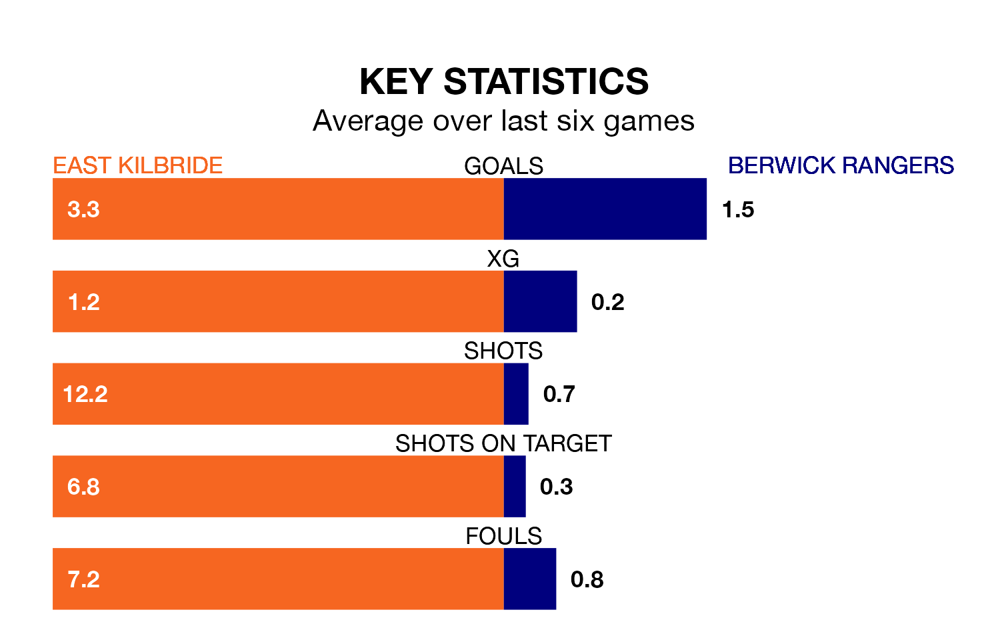

Berwick Rangers travel to East Kilbride on Saturday in the Lowland Football League.
The visitors come into the game on the back of a defeat in their last match, having lost to Linlithgow Rose 2-1 at home.
The Kilby, meanwhile, won their last match, 6-1 against BSC Glasgow.
With 89 goals in 30 games so far this season, East Kilbride are the league's highest scorers with 3.0 goals per game. And they are conceding fewer than average, letting in 37 goals at a rate of 1.2 per game.
Berwick, meanwhile, are below average scorers, with 1.2 goals per game, compared to a league average of 1.7. They have conceded 1.3 goals per game.
The Kilby are top of the table after 30 games, of which they have won 23 and drawn three, earning 72 points.
Rangers are 11 places behind the hosts in 12th, with 12 wins and five draws putting them on 41 points.
In the last 10 years, East Kilbride and Berwick have played each other on eight occasions. East Kilbride won six of them, Berwick one, and they drew once.
On average, the Kilby scored 2.0 goals and Berwick 1.0 in those matches.
Their last meeting was on October 7, when East Kilbride won 1-0 away.
East Kilbride are in reasonable form in the Lowland Football League, with four wins and two losses from their last six games.
With two wins and four losses over that period, the away side's form is much worse – they have taken six points from 18, compared to East Kilbride's 12.
Updated: 10:01 (UTC), 12/04/24